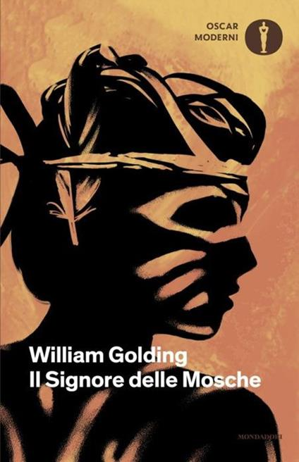

Dopo che il loro aereo precipita su un'isola deserta durante un conflitto bellico, un gruppo di ragazzi si ritrova completamente privo di adulti a guidarli. All'inizio provano a organizzarsi secondo regole condivise, ma con il passare dei giorni il sottile equilibrio tra civiltà e istinto comincia a incrinarsi, rivelando quanto sia fragile la sovrastruttura che chiamiamo società quando viene meno ogni autorità.
Ancora non l'ho letto, quindi per ora posso solo offrirti la copertina e la mia buona intenzione.
Mi piacerebbe tanto leggerlo nel periodo di scuola, chi sa se durerà...
Ripassa più avanti.
Le frasi più belle di questo libro dormono ancora tra le sue pagine, in attesa che io le scovi.